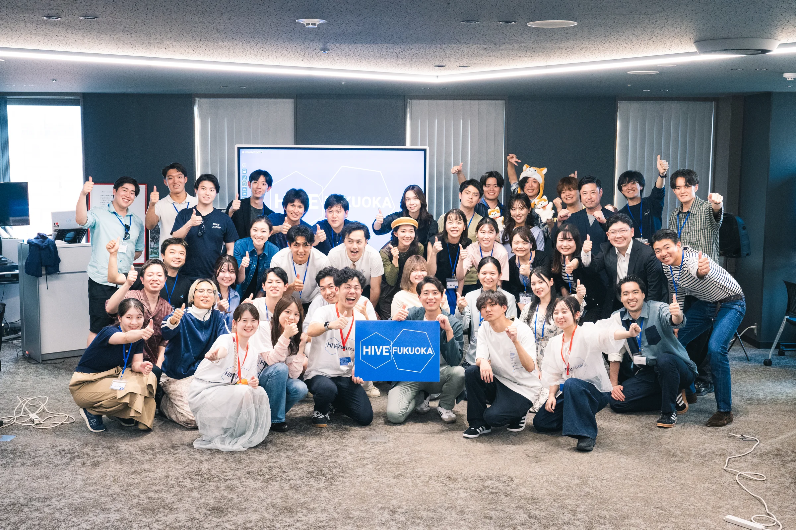
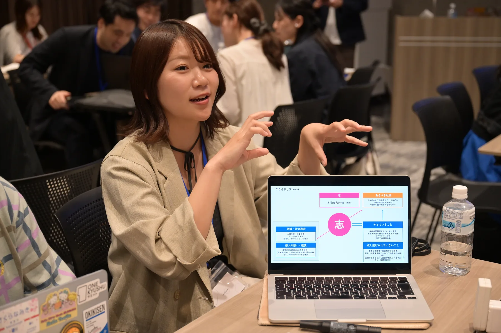
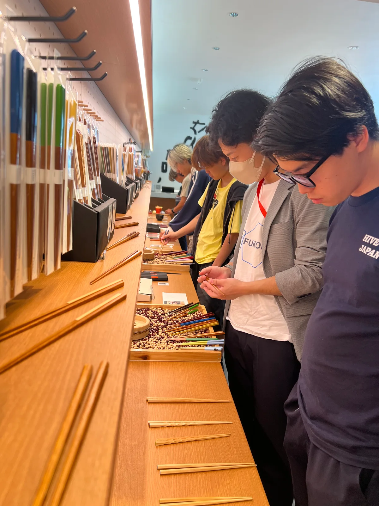
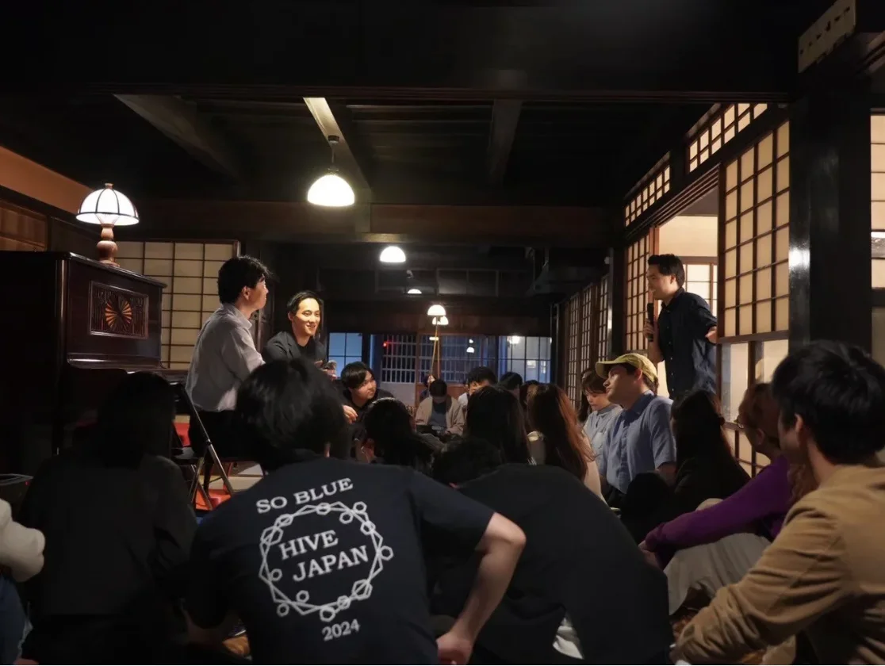
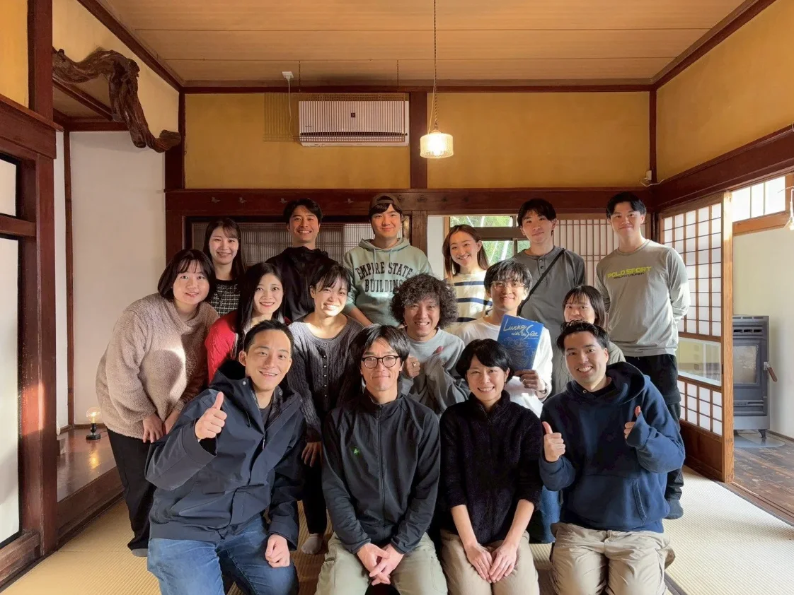
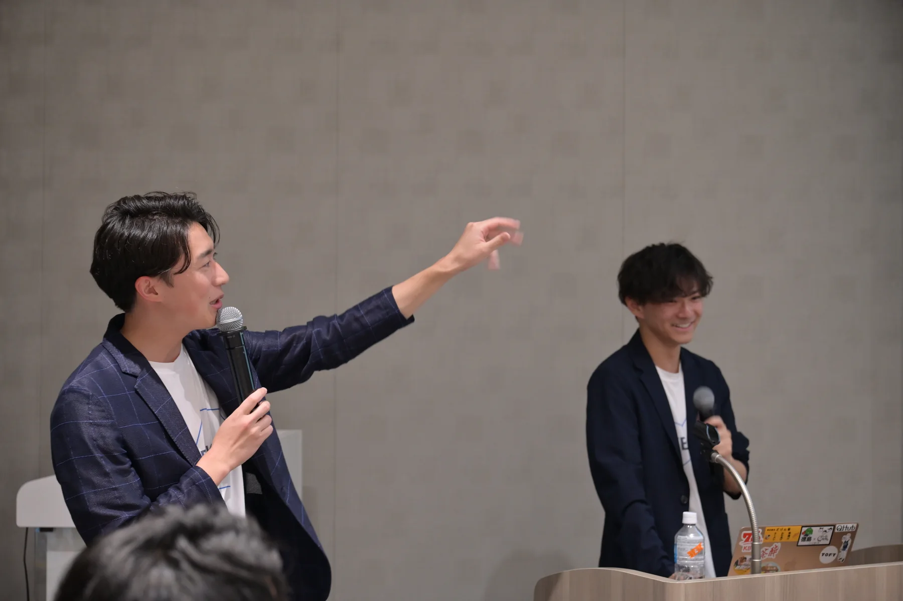
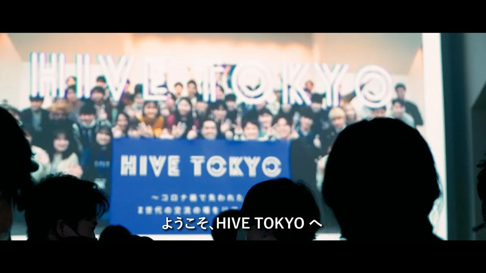

志をアップデートする「宴」
一人ひとりが大切にしていることや、これから取り組みたいことを語り、互いの志に耳を傾ける。お互いの挑戦を応援し合える、あたたかなコミュニティをつくっていきます。

「日本の未来を切り拓く」という使命のもと、若い世代が地域や分野を越えて集うコミュニティです。
普段の肩書きや利害関係から少し離れ、自分が向き合っている問いや、これから実現したいことを率直に話します。
学生や会社員、起業家、研究者、行政職員など、参加者の背景はさまざまです。合宿や少人数の集まりを通して、互いの考えを聞き、自分が大切にしたいことを言葉にしていきます。
東京で始まったHiveは、岡山、宮城、福島、福岡、インドへとつながってきました。それぞれの土地で活動するメンバーが、その地域に合った場をつくり、さらに新しい地域へ輪を広げています。
Hive Japan 公式サイト福岡に暮らす人、県外から福岡に関わる人、これから福岡で何かを始めたい人が集まります。
Hive Fukuokaは、Hive Japanの地域版として2026年に始まりました。運営メンバーの多くは福岡出身で、進学や就職を機に関東や関西へ移った経験があります。福岡に戻った人もいれば、いまも県外に暮らしながら、故郷との関わり方を考えている人もいます。
だからこそ、福岡に根を張って活動する人と、外から福岡にできることを考える人の双方が出会う場をつくりたいと考えました。そこへ、これから福岡で挑戦したい人も加わります。
福岡に暮らす人も、外から関わる人も、ここで何かを始めたい人も。思いを語るだけで終わらず、次の一歩を踏み出すきっかけをつくる。福岡を、挑戦が始まる場所にしたいと考えています。


Hive Fukuokaが、これからも大切にしたいのは「志をアップデートする宴」です。初開催の2026年は、「交差点の街・福岡に『漬かる』」をテーマに掲げました。
一人ひとりが大切にしていることや、これから取り組みたいことを語り、互いの志に耳を傾ける。お互いの挑戦を応援し合える、あたたかなコミュニティをつくっていきます。
初開催の2026年は、人や文化、挑戦が行き交う福岡を「交差点」と捉えました。観光地を巡るだけではなく、地域で活動する人を訪ね、仕事や暮らしに触れながら、福岡の今とこれからを考えました。
都市の便利さと自然の近さをあわせ持ち、九州各地や世界にも開かれている。福岡には、分野を越えて挑戦しやすい環境があります。
中心部から海や山へすぐに出られる。仕事や学びと、日々の暮らしが無理なく隣り合う街です。
分野の異なる人とも出会いやすく、相談から実行までの距離が短い。小さく始めて試せる環境があります。
九州各地から若者が集まり、港と空港で国内外につながる。古くから人や文化を受け入れてきた街です。
事業やまちづくりに限らず、アート、スポーツ、食、文化など、さまざまなテーマから福岡に関われます。
規模や目的の異なる集まりを重ねながら、出会った人との関係を育てています。
互いの仕事や関心を知り、率直に話せる関係をつくります。大きな集まりに参加する前の入口にもなります。
日常から少し離れ、同世代や社会の現場で活動する方々と話します。自分の問いや、これから取り組みたいことを見直します。
一度出会ったメンバーが再び集まり、近況や新しい問いを話します。活動の相談や、一緒に取り組むきっかけにもなっています。
東京で始まったHiveは、その土地に暮らすメンバーの手で各地へ広がってきました。内容や規模は、地域ごとに異なります。

地域の担い手と若者が集まり、岡山のこれからを考えたRegional Hiveです。

宮城で活動する人たちが集まり、地域のこれからを語り合ったRegional Hiveです。

1日目は福岡市で講義とディスカッションを行い、2日目は北九州・東区・天神・南関町の4コースに分かれてフィールドワークを行いました。写真と参加者の声を交えながら、初開催の2日間を振り返ります。
これまでのHiveで交わされてきた対話や、参加者の表情をご覧いただけます。

Hive Japanのアドバイザーと、これまでのサミットにご登壇いただいた方々の一部をご紹介します。
スマートニュース共同創業者
グロービス経営大学院 副学長
千葉県知事
岡山県知事
福岡市長
株式会社ボーダレス・ジャパン 代表取締役社長
そのほかにも、多くの方々にご登壇いただいています。
Hive Fukuokaには、社会人と大学生の双方が参加しています。業界や職種は問いません。自分が気になっていることを自分の言葉で話し、ほかの人の考えにも耳を傾けられることを大切にしています。
これまでの参加分野は、貿易、金融、広告、IT、スタートアップ、アート、行政、教育、研究、まちづくり、医療、福祉、食、農業、エンターテインメントなどです。
Hive Fukuokaへの参加は、コミュニティメンバーからの推薦をもとにご案内しています。参加や活動については、メールでお問い合わせください。
活動について問い合わせる